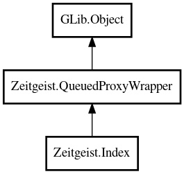

Index
Object Hierarchy:

Description:
public class Index :
QueuedProxyWrapper
Query the Zeitgeist Full Text Search Extension
include: zeitgeist.h
Content:
Creation methods:
Methods:
- protected override void on_connection_established ()
- protected override void on_connection_lost ()
- public async ResultSet search (string query, TimeRange time_range, GenericArray<Event> event_templates, uint32 offset, uint32 num_events, ResultType result_type, Cancellable? cancellable = null) throws Error
Perform a full text search possibly restricted to a
TimeRange and/or set of event templates.
- public async ResultSet search_with_relevancies (string query, TimeRange time_range, GenericArray<Event> event_templates, StorageState storage_state, uint32 offset, uint32 num_events, ResultType result_type, Cancellable? cancellable = null, out double[] relevancies) throws Error
Perform a full text search possibly restricted to a
TimeRange and/or set of event templates. As opposed to zeitgeist_index_search(),
this call will also return numeric relevancies of the events in the ResultSet
.
Inherited Members:
All known members inherited from class Zeitgeist.QueuedProxyWrapper
All known members inherited from class GLib.Object
- @get
- @new
- @ref
- @set
- add_toggle_ref
- add_weak_pointer
- bind_property
- connect
- constructed
- disconnect
- dispose
- dup_data
- dup_qdata
- force_floating
- freeze_notify
- get_class
- get_data
- get_property
- get_qdata
- get_type
- getv
- interface_find_property
- interface_install_property
- interface_list_properties
- is_floating
- new_valist
- new_with_properties
- newv
- notify
- notify_property
- ref_count
- ref_sink
- remove_toggle_ref
- remove_weak_pointer
- replace_data
- replace_qdata
- set_data
- set_data_full
- set_property
- set_qdata
- set_qdata_full
- set_valist
- setv
- steal_data
- steal_qdata
- thaw_notify
- unref
- watch_closure
- weak_ref
- weak_unref